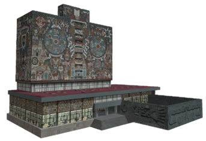
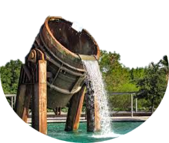
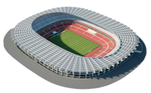

Referencia para el tamaño de las burbujas
 750 hect. aprox.
C. Universitaria
 100 hect. aprox.
Parque Fundidora
 50 hect. aprox.
Estadio Azteca
 10 hect. aprox.
10 hect. aprox.
Auditorio Nacional
5 hect. aprox.
Zócalo, CDMX
 1 hectárea aprox.
1 hectárea aprox.
Parque España